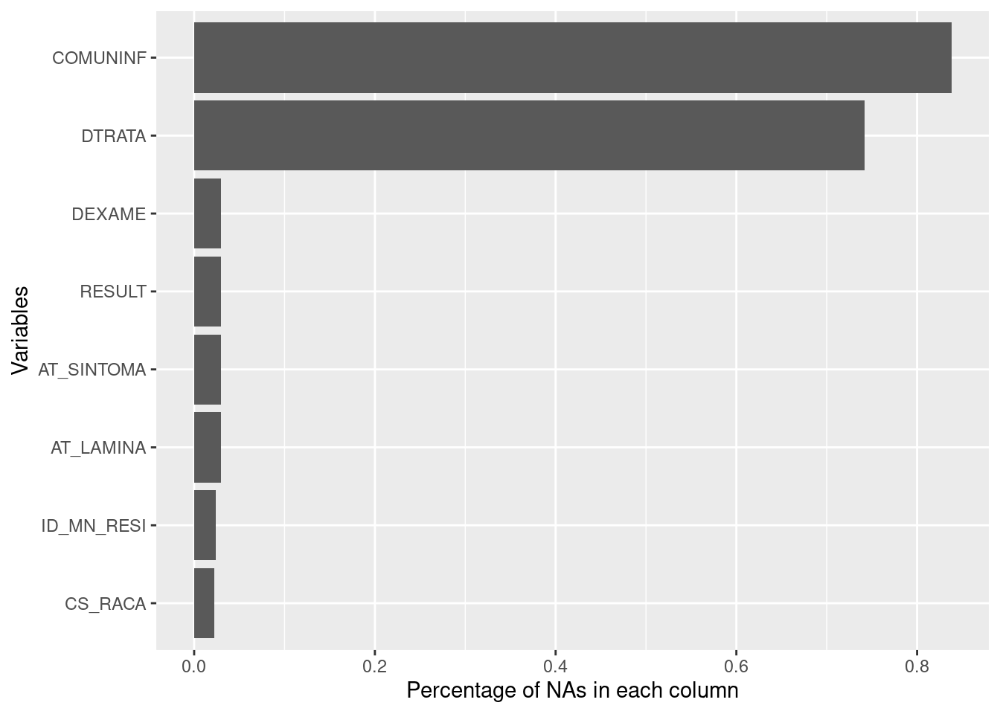
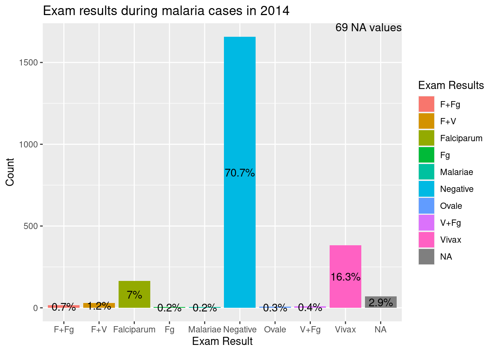
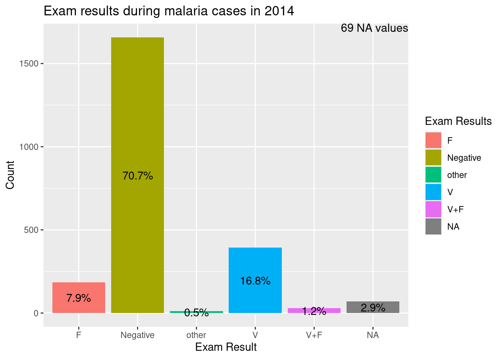
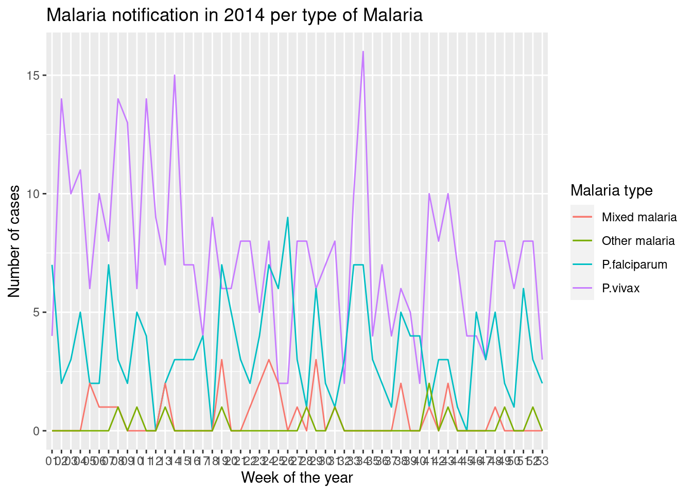
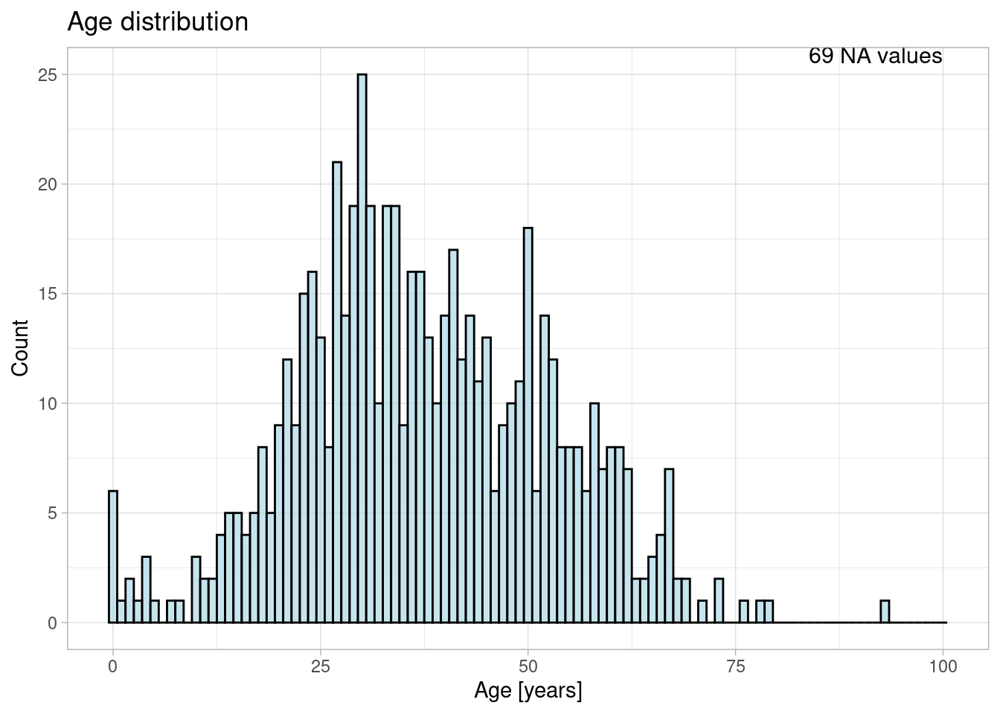
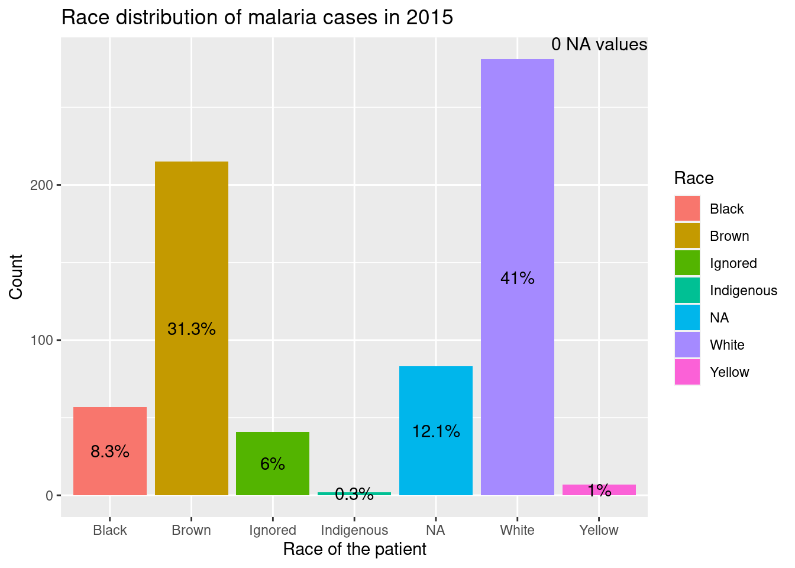
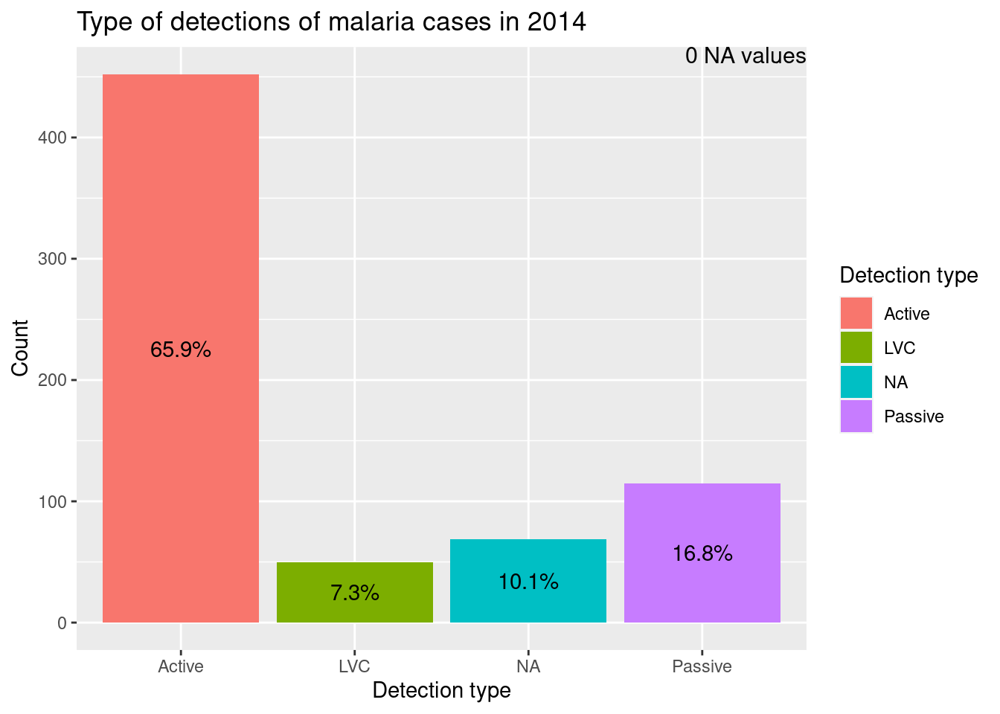
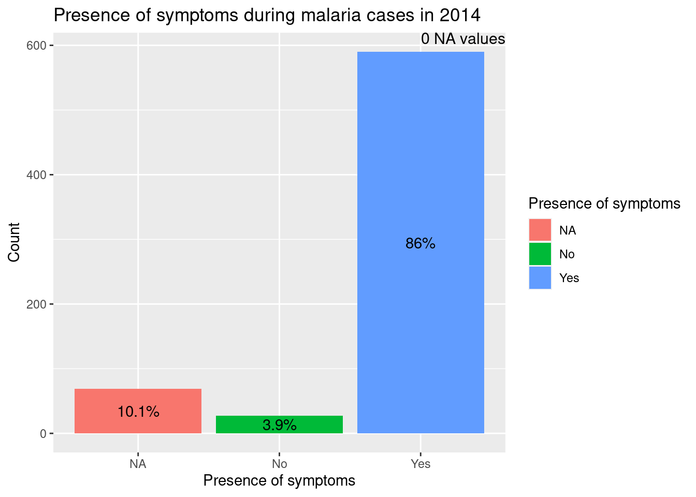
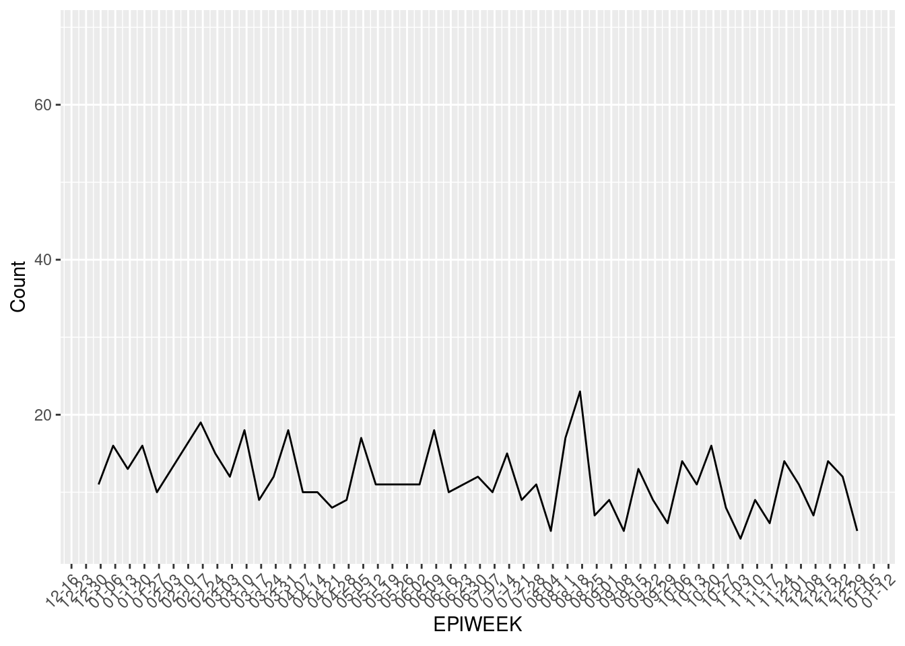
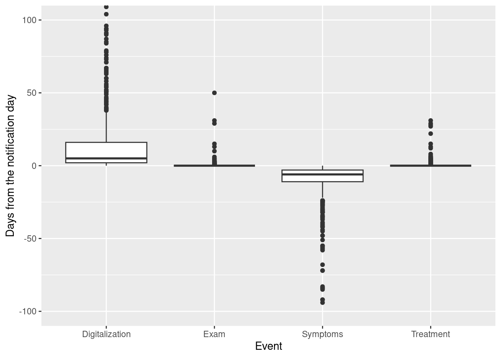

# load packages
packages <- c("microdatasus", "dplyr", "purrr", "ggplot2","tidyr",
"lubridate","geobr", "stringr")
invisible(install.packages(setdiff(packages, rownames(installed.packages()))))
invisible(lapply(packages, function(pkg) suppressMessages(require(pkg, character.only = TRUE))))
# other options
options(scipen = 999)
options(timeout = 900)
# load functions
files.sources <- list.files("R/")
invisible(sapply(paste0("R/", files.sources), source))Malaria in Brazil
This document aims at introducing SINAN malaria data to someone with no previous experience.
The steps include:
- Downloading the data
- Getting to know the data: variables and completeness
- Information on the patients: Age, Sex, Pregnancy and Race
- Classifying the malaria cases: detection and symptoms
- Timeline of malaria cases: distribution throughout the year, and course of the cases
- Mapping spatially: municipality types, malaria types and incidences
Along the way, each topic will be divided into 3:
indicates that you will learn something
indicates that you will see the data in a plot
 indicates that there is a opportunity to filter data (if necessary).
indicates that there is a opportunity to filter data (if necessary).
Setting up the R environment
In every R script,
In this script we will need the following R-scripts:
microdatasus: To download the health data from brazil
dplyr:
purrr:
ggplot2: to create the graphs
tidyr:
lubridate: to help format the dates
geobr: to download the shapefiles of brazils
stringr:
Other options that are being set up now include, setting a maximum waiting time for functions (i.e. timeout), how large number should be displayed (i.e. scipen) and functions are locally loaded.
Downloading the data
As described in the download data - instructions, the health data from Brazil can be downloaded in many different ways. Here, it is downloaded with the help of the package microdatasus. The following code block will download the data for the year 2014 (which was chosen randomly).
# malariaData <- fetch_datasus(year_start = 2014, year_end = 2014, information_system = "SINAN-MALARIA")
malariaData <- readRDS("data/mal14.rds")Getting to know the Data
Variables
There are a total of 50 variables. The variables names can be seen below:
colnames(malariaData) [1] "TP_NOT" "ID_AGRAVO" "DT_NOTIFIC" "SEM_NOT" "NU_ANO"
[6] "SG_UF_NOT" "ID_MUNICIP" "ID_REGIONA" "ID_UNIDADE" "DT_SIN_PRI"
[11] "SEM_PRI" "ANO_NASC" "NU_IDADE_N" "CS_SEXO" "CS_GESTANT"
[16] "CS_RACA" "CS_ESCOL_N" "SG_UF" "ID_MN_RESI" "ID_RG_RESI"
[21] "ID_PAIS" "DT_INVEST" "ID_OCUPA_N" "CLASSI_FIN" "AT_ATIVIDA"
[26] "AT_LAMINA" "AT_SINTOMA" "TPAUTOCTO" "COUFINF" "COPAISINF"
[31] "COMUNINF" "LOC_INF" "DEXAME" "RESULT" "PMM"
[36] "PCRUZ" "TRA_ESQUEM" "DSTRAESQUE" "DTRATA" "NU_LOTE_I"
[41] "DT_ENCERRA" "DT_DIGITA" "DT_TRANSUS" "DT_TRANSDM" "DT_TRANSSM"
[46] "DT_TRANSRM" "DT_TRANSRS" "DT_TRANSSE" "NU_LOTE_V" "NU_LOTE_H" The definition of each variable can be found in the official documentation or online in Portuguese, or in this translated csv file. This file also contains the decodification for all numerical categories. A small overview of this file can be seen below:
malariaVarDefPath <- file.path(getwd(), 'workspace', 'Dictionary_Malaria_EN.csv')
malariaVarDef <- read.csv(malariaVarDefPath)
knitr::kable(malariaVarDef[14:20,1:5])| Var | Translation | Category.1 | Category.2 | Category.3 | |
|---|---|---|---|---|---|
| 14 | RACA | Sex | White | Black | Yellow |
| 15 | GESTANTE1 | Pregnancy | Yes | No | Not applicable |
| 16 | NIV_ESCO_1 | Education level | None | 1-3years | 4-7years |
| 17 | GESTANTE. | Pregnancy | 1trimester | 2trimester | 3trimester |
| 18 | NIV_ESCO | Education level | Analphabet | 1-4 incomplete | 4 complete |
| 19 | COD_OCUP | Occupation | Agriculture | Pecuaria | Domestic |
| 20 | TIPO_LAM | Type of detection | Passive | Active | LVC |
 To avoid working with unnecessary data, it is useful to filter out the variables that will not be used. Below is a line of code on how to select only the needed variables.
To avoid working with unnecessary data, it is useful to filter out the variables that will not be used. Below is a line of code on how to select only the needed variables.
sel_var <- c("NU_IDADE_N","CS_SEXO", "CS_GESTANT", "CS_RACA", "AT_LAMINA", "AT_SINTOMA", "DT_NOTIFIC", "DT_SIN_PRI", "DT_DIGITA", "DEXAME", "DTRATA", "ID_MUNICIP", "ID_MN_RESI", "COMUNINF","RESULT")
malariaData <- malariaData %>% select(all_of(sel_var))Completeness of the data
Some of these variables are mandatory to notify, others are not, which leads to incomplete datasets. The chart NACountChart shows the the variables which have NA-values and the percentage of NAs they contain.
NACount <- malariaData %>% map(~mean(is.na(.)))
NACount <- data.frame(count=unlist(NACount),
var=names(NACount))Visualise it!
ggplot(NACount[NACount$count != 0, ], aes(x = reorder(var, count), y = count)) +
geom_bar(stat = "identity", width = 0.9, position = position_dodge(width = 5)) +
ylab("Percentage of NAs in each column") +
xlab("Variables") +
coord_flip()
On the contrary, it is also good to know what variables are complete.
NACount$var[NACount$count == 0][1] "NU_IDADE_N" "CS_SEXO" "CS_GESTANT" "DT_NOTIFIC" "DT_SIN_PRI"
[6] "DT_DIGITA" "ID_MUNICIP" To filter out variables which are (almost) completely empty,you can run the following lines.
To filter out variables which are (almost) completely empty,you can run the following lines.
drop_variables <- NACount$var[NACount$count == 1]
malariaData <- malariaData[, !(names(malariaData) %in% drop_variables)]Exam results
The database distinguishes 10 different types/combinations of malaria:
- Negative
- Falciparum
- F+Fg
- Vivax
- F+V
- V+Fg
- Fg
- Malariae
- F+M 10.Ovale
The negative notification needs to be filtered (excluded) to obtain the total malaria cases because they are not cases as the exam result was negative. Also, we should exclude NAs.
malariaData <- malariaData %>%
mutate(RESULT = as.factor(case_when(RESULT == "1" ~ "Negative",
RESULT == "2" ~ "Falciparum",
RESULT == "3" ~ "F+Fg",
RESULT == "4" ~ "Vivax",
RESULT == "5" ~ "F+V",
RESULT == "6" ~ "V+Fg",
RESULT == "7" ~ "Fg",
RESULT == "8" ~ "Malariae",
RESULT == "9" ~ "F+M",
RESULT == "10" ~ "Ovale")))Visualise it!
ggplot(malariaData, aes(x = RESULT, fill=RESULT)) +
geom_bar() +
annotate("text", x = Inf, y = Inf, hjust = 1, vjust = 1, size = 4,
label = paste0(sum(is.na(malariaData$RESULT)), " NA values"))+
labs(title="Exam results during malaria cases in 2014",
y="Count", x="Exam Result", fill="Exam Results") +
geom_text(stat = 'count', position = position_stack(vjust = 0.5),
aes(label = paste0(round((after_stat(count))/sum(after_stat(count)) * 100, 1), "%"),
x = RESULT))
However, generally, people only distinguish in 3 categories: P. vivax and P. falciparum and the mixed version P+V.
malariaData <- malariaData %>%
mutate(RES_EXAM = as.factor(case_when(RESULT == "Falciparum" | RESULT == "F+Fg" | RESULT == "Fg" | RESULT == "F+M" ~ "F",
RESULT == "Vivax" | RESULT == "V+Fg" ~ "V",
RESULT == "F+V" ~ "V+F",
RESULT == "Malariae" | RESULT == "Ovale" ~ "other",
RESULT == "Negative" ~ "Negative")))Visualise it!
ggplot(malariaData, aes(x = RES_EXAM, fill=RES_EXAM)) +
geom_bar() +
labs(title="Exam results during malaria cases in 2014",
y="Count", x="Exam Result", fill="Exam Results") +
annotate("text", x = Inf, y = Inf, hjust = 1, vjust = 1, size = 4,
label = paste0(sum(is.na(malariaData$RES_EXAM)), " NA values"))+
geom_text(stat = 'count', position = position_stack(vjust = 0.5),
aes(label = paste0(round((after_stat(count))/sum(after_stat(count)) * 100, 1), "%"),
x = RES_EXAM))
The majority of case are Vivax (2.9%), followed by Falciparum (2.9%). All other categories together make 100%. Fg is the gametocyte phase of the P. falciparum life cycle.
Below, the distribution of the most prevalent malaria can bee seen throughout the year on an epiweek time resolution. Note the vivax and falciparum cases are the combination between more than one RESULT category.

 To exclude cases with a negative test result, you can run the following lines
To exclude cases with a negative test result, you can run the following lines
malariaData <- malariaData[malariaData$RESULT != "Negative",]Information on the Patients
Age of patients
For malaria, the age of the patients can be derived from NU_IDADE_N. NU_IDADE_N is codified:
- the first number indicates what “dimension” it is using. 1= Hour, 2= day, 3= month, 4= year.
- the last numbers indicate the age.
The age can be “decodified” with the command line below. This line of code also automatically removes all inconsistent ages, i.e. people over 120 years and people whose age was given in a unusual way (e.g. 84 months).
malariaData <- malariaData %>%
mutate(AGE = case_when(NU_IDADE_N < 120 ~ as.numeric(NU_IDADE_N), # assumes that non-codified data means that the age in years was given
NU_IDADE_N >= 120 & NU_IDADE_N < 1000 ~ NA_real_,
NU_IDADE_N >= 1000 & NU_IDADE_N < 2366 ~ 0,
NU_IDADE_N >= 2366 & NU_IDADE_N < 3000 ~ NA_real_,
NU_IDADE_N >= 3000 & NU_IDADE_N < 3013 ~ 0,
NU_IDADE_N >= 3013 & NU_IDADE_N < 4000 ~ NA_real_,
NU_IDADE_N >= 4000 & NU_IDADE_N < 4120 ~ as.numeric(NU_IDADE_N - 4000),
NU_IDADE_N >= 4120 ~ NA_real_,
TRUE ~ NA_real_))Visualise it!
ggplot(malariaData, aes(x = AGE))+
geom_histogram(binwidth = 1, fill = "lightblue",color="black", alpha = 0.7)+
annotate("text", x = 100, y = Inf, label = paste0(sum(is.na(malariaData$AGE)), " NA values"), hjust = 1, vjust = 1, size = 4)+
labs(x="Age [years]", y="Count", title="Age distribution")+
theme_light()
 Other datasets may include a date of birth, if provided, it can be used to corroborate the real age.
Other datasets may include a date of birth, if provided, it can be used to corroborate the real age.
Sex of the patients
The sex of the patients is given by CS_SEXO. A table and a barplot of its distribution can be seen below:
malariaData <- malariaData %>%
mutate(CS_SEXO = as.factor(case_when(CS_SEXO == "F" ~ "Female",
CS_SEXO == "M" ~ "Male",
CS_SEXO == "I" ~ "Ignored",
TRUE ~ "NA")))Visualise it!
ggplot(malariaData, aes(x = CS_SEXO, fill=CS_SEXO)) +
geom_bar() +
labs(title="Sex distribution of malaria cases in 2015",
x="Sex of the patient", y="Count", fill="Sex")+
geom_text(stat = 'count', position = position_stack(vjust = 0.5),
aes(label = paste0(round((after_stat(count))/sum(after_stat(count)) * 100, 1), "%"),
x = CS_SEXO)) +
theme_light()
Pregnancy
Another related variable is CS_GESTANT, which indicates whether the patient is pregnant. Since only women below a certain age can get pregnant this is another way to check for inconsistencies.
pregnant <- malariaData %>%
filter((CS_GESTANT == 1 | CS_GESTANT == 2 | CS_GESTANT ==3 | CS_GESTANT == 4)) %>%
count()
mpreg <- malariaData %>%
filter(CS_SEXO == "M" & (CS_GESTANT == 1 | CS_GESTANT == 2 | CS_GESTANT ==3 | CS_GESTANT == 4)) %>%
count()
pover50 <- malariaData %>%
filter(AGE > 50 & (CS_GESTANT == 1 | CS_GESTANT == 2 | CS_GESTANT ==3 | CS_GESTANT == 4)) %>%
count() Out of 5 pregnant patients, there are 0 pregnant males and 0 pregnant women over the age of 50. Again, depending on the aim of the study, these patients could be excluded using the following line.
Out of 5 pregnant patients, there are 0 pregnant males and 0 pregnant women over the age of 50. Again, depending on the aim of the study, these patients could be excluded using the following line.
malariaData <- malariaData %>%
filter(!(CS_GESTANT %in% c("1", "2", "3", "4") & CS_SEXO == "M") &
!(CS_GESTANT %in% c("1", "2", "3", "4") & AGE > 50))Race of the patients
The race of the patient is given by CS_RACA. A barplot of its distribution can be seen below:
malariaData <- malariaData %>%
mutate(CS_RACA = as.factor(case_when(CS_RACA == 1 ~ "White",
CS_RACA == 2 ~ "Black",
CS_RACA == 3 ~ "Yellow",
CS_RACA == 4 ~ "Brown",
CS_RACA == 5 ~ "Indigenous",
CS_RACA == 9 ~ "Ignored",
TRUE ~ "NA")))Visualise it!

Classifying the malaria cases
Type of detection
Malaria can be detected either actively (when someone goes to doctor because of symptoms), passively (as protocol when one case is detected, people living in the same place are screened) or through LVC (Lamina de Verificaçao de Cura = cure thick blood smear verification). The variable AT_LAMINA, shows exactly this.
malariaData <- malariaData %>%
mutate(AT_LAMINA = as.factor(case_when(AT_LAMINA == 1 ~ "Active",
AT_LAMINA == 2 ~ "Passive",
AT_LAMINA == 3 ~ "LVC",
TRUE ~ "NA")))Visualise it!
ggplot(malariaData, aes(x = AT_LAMINA, fill=AT_LAMINA)) +
geom_bar() +
labs(title="Type of detections of malaria cases in 2014",
y="Count", x="Detection type", fill="Detection type")+
geom_text(stat = 'count',
aes(label = paste0(round((after_stat(count))/sum(after_stat(count)) * 100, 1), "%"),
x = AT_LAMINA),
position = position_stack(vjust = 0.5)) +
annotate("text", x = Inf, y = Inf, hjust = 1, vjust = 1, size = 4,
label = paste0(sum(is.na(malariaData$AT_LAMINA)), " NA values"))
As can be seen, most cases (65.9%) are found actively and only 7.3% are passively.
Symptoms
For malaria, the variable AT_SINTOMA makes the distinction whether there are symptoms present or not.
malariaData <- malariaData %>%
mutate(AT_SINTOMA = as.factor(case_when(AT_SINTOMA== "1" ~ "Yes",
AT_SINTOMA == "2" ~ "No",
TRUE ~ "NA")))Visualise it!
ggplot(data= malariaData, aes(x = AT_SINTOMA, fill=AT_SINTOMA)) +
geom_bar() +
labs(title="Presence of symptoms during malaria cases in 2014",
y="Count", x="Presence of symptoms", fill="Presence of symptoms") +
annotate("text", x = Inf, y = Inf, hjust = 1, vjust = 1, size = 4,
label = paste0(sum(is.na(malariaData$AT_SINTOMA)), " NA values"))+
geom_text(stat = 'count', position = position_stack(vjust = 0.5),
aes(label = paste0(round((after_stat(count))/sum(after_stat(count)) * 100, 1), "%"),
x = AT_SINTOMA))
A clear majority of NA% malaria cases had symptoms.
Timeline of malaria cases
Notification distribution throughout the year
In the dataset, you can find many dates, one of the most important might be the notification date DT_NOTIFIC. This is the first time that a potential malaria patient contacts the medical authorities. Below the annual distribution of notifications during 2014 can be seen. There is no clear seasonal variation but tended to concentrate cases during the summer season in Brazil.
malariaData %>%
mutate(EPIWEEK = floor_date(DT_NOTIFIC, "weeks")) %>%
group_by(EPIWEEK) %>%
summarise(Count = n()) %>%
ggplot() +
geom_line(aes(x = EPIWEEK, y = Count)) +
scale_x_date(date_labels = "%m-%d", date_breaks = "1 week") +
theme(axis.text.x = element_text(angle = 45, hjust = 1))
Timeline of all other events
First, symptoms occur (DT_SIN_TO_PRI). Once the doctor notifies a suspected malaria case (DT_NOTIFIC), it will be digitized (DT_DIGITA). The malaria case needs to be confirmed through an exam (DEXAME), and if confirmed, treated (DTRATA). Below are boxplots for each of the events date.
malariaData <- malariaData %>%
mutate(Symptoms = as.numeric(DT_SIN_PRI - DT_NOTIFIC),
Digitalization = as.numeric(DT_DIGITA - DT_NOTIFIC),
Exam = as.numeric(DEXAME - DT_NOTIFIC),
Treatment = as.numeric(DTRATA - DT_NOTIFIC))malariaData %>%
select(Symptoms, Digitalization, Exam, Treatment) %>%
gather(TYPE, DAYS) %>%
ggplot(aes(x = TYPE, y = DAYS)) +
geom_boxplot() +
coord_cartesian(ylim = c(-100, 100)) +
xlab("Event") +
ylab("Days from the notification day")
The boxplot is able to visualize possible outliers:
- The first symptoms occur before the notification date, the vast majority of them in the 10 days prior to it. Symptoms that occur after the notification date or a long time before hte notification date may have to be removed.
- The treatment, digitalization and exam dates, must fall on or within the 60 days after the notification date. If they fall outside this range, they can be coonsidered outliers and may be removed.
Mapping spatially
Notification, Residence & Probable Infection
There is of course also spatial data in the data sets. Before diving in deeper it is necessary to download the shapefiles of Brazil municipalities. This can be done via the geobr package. However, the municipality code given by geobr is one digit too long and has to be shortened to 6 digits.
In total, the dataset refers to 3 different locations:
- ID_MUNICIP is the municipality where the case is notified.
- ID_MN_RESI is the municipality of residence of the patient.
- COMUNINF is the municipality the patient probably got the infection.
# muni <- read_municipality(code_muni = "all", year = 2014, showProgress = FALSE) %>%
# mutate(code_muni = str_sub(code_muni, end = 6)) %>%
# left_join(as.data.frame(table(malariaData$ID_MUNICIP, dnn = list("code_muni")), responseName = "noti_muni")) %>%
# left_join(as.data.frame(table(malariaData$COMUNINF, dnn = list("code_muni")), responseName = "infec_muni")) %>%
# left_join(as.data.frame(table(malariaData$ID_MN_RESI, dnn = list("code_muni")), responseName = "resi_muni"))Depending on what the aim of the study is, each of these variables can be important.
# cols <- c("green", "yellow","orange","red", "black") #change these as needed
# breaks <- c(0, 10, 100, 1000, 10000, 100000) #change these as needed
#
# ggplot(muni) +
# ggtitle("Extra-Amazon malaria per municipality of notification") +
# geom_sf( aes(fill = noti_muni), size = .15, show.legend = TRUE) +
# scale_fill_stepsn(breaks = breaks,
# colours = cols,
# values = scales::rescale(breaks))
#
# ggplot(muni) +
# ggtitle("Extra-Amazon malaria per municipality of probable infection") +
# geom_sf(aes(fill = infec_muni), size = .15, show.legend = TRUE) +
# scale_fill_stepsn(breaks = breaks,
# colours = cols,
# values = scales::rescale(breaks))
#
# ggplot(muni) +
# ggtitle("Extra-Amazon malaria per municipality of residence")+
# geom_sf( aes(fill = resi_muni), size = .15, show.legend = TRUE) +
# scale_fill_stepsn(breaks = breaks,
# colours = cols,
# values = scales::rescale(breaks))What did you find after see the maps? Take a look of the difference between the Extra-Amazon malaria by municipality of notification and probable infection. Almost all malaria notified in the Extra-Amazon region was acquired in the Amazon region. Some people live in the Amazon region were notified in the Extra-Amazon region.
Mapping types of Malaria
If one wants to map them distinguishing by type, the following code can be used:
# muni <- muni %>%
# left_join(as.data.frame(table(malariaData$ID_MUNICIP[malariaData$RES_EXAM == "V"], dnn = list("code_muni")), responseName = "vivax_muni")) %>%
# left_join(as.data.frame(table(malariaData$ID_MUNICIP[malariaData$RES_EXAM == "F"], dnn = list("code_muni")), responseName = "falci_muni")) %>%
# left_join(as.data.frame(table(malariaData$ID_MUNICIP[malariaData$RES_EXAM == "V+F"], dnn = list("code_muni")), responseName = "mixed_muni")) %>%
# left_join(as.data.frame(table(malariaData$ID_MUNICIP[malariaData$RES_EXAM == "other"], dnn = list("code_muni")), responseName = "other_muni"))
#
# vivax_plot <- ggplot(muni) +
# geom_sf( aes(fill = vivax_muni), size = .15, show.legend = TRUE) +
# scale_fill_viridis_c() +
# labs(subtitle = paste0("Number of P. vivax cases in Brazil 2015"), size = 8) +
# theme_minimal()
# vivax_plot
#
# falci_plot <- ggplot(muni) +
# geom_sf( aes(fill = falci_muni), size = .15, show.legend = TRUE) +
# scale_fill_viridis_c() +
# labs(subtitle=paste0("Number of P. falciparum cases in Brazil 2015"), size = 8) +
# theme_minimal()
# falci_plot
#
# mixed_plot <- ggplot(muni) +
# geom_sf( aes(fill = mixed_muni), size = .15, show.legend = TRUE) +
# scale_fill_viridis_c() +
# labs(subtitle=paste0("Number of mixed cases in Brazil 2015"), size = 8) +
# theme_minimal()
# mixed_plotCalculating the incidence
Sometimes, having the absolute values is helpful. But other times, the number of cases can be highly dependent on the number of inhabitants and then the incidence or other similar indicator is used. Another reason to use incidence is to make comparable the number of cases between areas and different times. Specifically for malaria, the analogous indicator, the Annual Parasite Index (API) is most common. This indicator is calculated by the number of malaria positive patients occurred in a specific time and place divided by the population per 1.000 inhabitants. This positive patients can be a new case or a relapse. Relapses are most common in malaria vivax infection.
For this, the population data needs to be loaded from IBGE either manually or using the local function “get_br_pop_data” (instructions can be viewed in 0_DownloadData.md).
# get_br_pop_data(2015, save=F)
#
# muni <- left_join(muni, pop_2015[c("code_muni","pop")], by="code_muni")
# muni$pop <- as.numeric(muni$pop)The incidence is then calculated by dividing the malaria cases by the population of each municipality and multiplication by 1000.
# muni$noti_inc <- muni$noti_muni / muni$pop*1000
# muni$infec_inc <- muni$infec_muni / muni$pop*1000
# muni$resi_inc <- muni$resi_muni / muni$pop*1000
#
# breaks2 <- c(0, 5, 25, 50, 100, 250)
# noti_inci_plot <- ggplot(muni) +
# ggtitle("Incidence of malaria notifications in 2015")+
# geom_sf( aes(fill = noti_inc), size = .15, show.legend = TRUE) +
# scale_fill_stepsn(breaks = breaks2,
# colours = cols,
# values = scales::rescale(breaks2))
# noti_inci_plot
#
# infe_inci_plot <- ggplot(muni) +
# ggtitle("Incidence of probable malaria infections in 2015")+
# geom_sf(aes(fill = infec_inc), size = .15, show.legend = TRUE) +
# scale_fill_stepsn(breaks = breaks2,
# colours = cols,
# values = scales::rescale(breaks2))
# infe_inci_plot
#
# resi_inci_plot <- ggplot(muni) +
# ggtitle("Incidence of residents with malaria in 2015")+
# geom_sf(aes(fill = resi_inc), size = .15, show.legend = TRUE) +
# scale_fill_stepsn(breaks = breaks2,
# colours = cols,
# values = scales::rescale(breaks2))
# resi_inci_plotIf one wants to know the incidence depending on the malaria type:
# muni$vivax_inc <- muni$vivax_muni / muni$pop*1000
# muni$falci_inc <- muni$falci_muni / muni$pop*1000
# muni$mixed_inc <- muni$mixed_muni / muni$pop*1000
#
# vivax_inci_plot <- ggplot(muni) +
# geom_sf(aes(fill = vivax_inc), size = .15, show.legend = TRUE) +
# scale_fill_viridis_c() +
# labs(subtitle = paste0("Vivax incidence in Brazil 2015"), size = 8) +
# theme_minimal()
# vivax_inci_plot
#
# falci_inci_plot<- ggplot(muni) +
# geom_sf( aes(fill = falci_inc), size = .15, show.legend = TRUE) +
# scale_fill_viridis_c()+
# labs(subtitle = paste0("Falciparum incidence in Brazil in 2015"), size = 8) +
# theme_minimal()
# falci_inci_plot
#
# mixed_inci_plot<- ggplot(muni) +
# geom_sf( aes(fill = mixed_inc), size = .15, show.legend = TRUE) +
# scale_fill_viridis_c()+
# labs(subtitle = paste0("Mixed incidence in Brazil in 2015"), size = 8) +
# theme_minimal()
# mixed_inci_plot